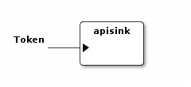

sacre bileşen çerçevesi
Table of Contents
sacre bileşen çerçevesi
sacre (https://github.com/derino/sacre), bileşen tabanlı bir duraksız veri işleme çerçevesidir. Açık kaynaklı bir yazılımdır. sacre bileşen çerçevesi ile uygulama geliştirmek iki adımdan oluşuyor.
- iş hattı oluşturmak
İş hattı oluşturmak bileşenleri dizerek uygulama oluşturmak isteyen kullanıcıların nasıl yapıldığını bilmesi gereken bir faaliyettir.
- bileşen tanımlamak
Yeni bileşen yaratmak belirli bir uygulama alanı için uygulama geliştirilebilmesini sağlamak için yapılır. Geliştiricilere yönelik bir faaliyettir.
İş hattı oluşturmak
sacre'de bileşenler iş parçacığı olarak çalışırlar ve kapılarına bağlı diğer bileşenlerle belirli tipteki verileri alıp vererek iletişirler. Hangi bileşenlerin birbiriyle hangi kapıları üzerinden bağlı olduğunu tanımlayan dizilime iş hattı denir. sacre'de iş hattı oluşturmak için basit bir dil var. En basit haliyle bileşenler birbirlerine ! işlemiyle seri, & işlemiyle paralel bağlanıyor. & işleminin ! işlemine göre önceliği var. Dikkat edilmesi gereken nokta birbirine bağlanan kapıların aynı veri tipini geçiriyor olmalarıdır.
Üstteki resimde görülen örnek iş hattını tanımlamak için A & B ! C ! D ! E & F ifadesi yeterli.
Öz sacre bileşenleri
Uygulamaya özgü tanımlanmış bileşenlerin dışında sacre'nin kendiliğinden gelen bazı bileşenleri de var.
apisink
| Adı | apisink |
| İşlevi | Geliştiricilerin işhattı sonuçlarını fonksiyon sonucu olarak almasını sağlar. Tip parametresi senkron olarak verildiğinde döndürülen sonuç apisink bileşenine giren tüm tokenlerin bir listesidir. Asenkron olarak verildiğinde öncesinde dinleyici olarak eklenmiş nesneler her yeni token geldiğinde ve iş hattı tamamlandığında haberdar edilir. |
| Girdi kapısı | 1 tane. Kapıdan geçen veri tipi Token. |
| Çıktı kapısı | - |
Parametreleri
| parametre | alabildiği değerler | açıklama | varsayılan değeri |
|---|---|---|---|
| tip | senkron ya da asenkron | sonuçların alınma şeklini belirler. | senkron |
Görsel gösterimi

fork
| Adı | fork |
| İşlevi | Girdi kapısındaki veriyi ikileyerek iki çıktı kapısına birden gönderir. |
| Girdi kapısı | 1 tane. Kapıdan geçen veri tipi Token. |
| Çıktı kapısı | 2 tane. Kapıdan geçen veri tipi Token. |
| Parametreleri | - |
Görsel gösterimi

merge
| Adı | merge |
| İşlevi | İki girdi kapısındaki verileri çıktı kapısına gönderir. |
| Girdi kapısı | 2 tane. Kapıdan geçen veri tipi Token. |
| Çıktı kapısı | 1 tane. Kapıdan geçen veri tipi Token. |
| Parametreleri | - |
Görsel gösterimi

intersection
| Adı | intersection |
| İşlevi | İki girdi kapısındaki verilerin kesişim kümesini çıktı kapısına gönderir. |
| Girdi kapısı | 2 tane. Kapıdan geçen veri tipi Token. |
| Çıktı kapısı | 1 tane. Kapıdan geçen veri tipi Token. |
| Parametreleri | - |
Görsel gösterimi

GND (ground)
| Adı | gnd |
| İşlevi | Girdi kapısındaki verileri alır ve onlarla hiçbir şey yapmaz. |
| Girdi kapısı | 1 tane. Kapıdan geçen veri tipi Token. |
| Çıktı kapısı | - |
| Parametreleri | - |
Görsel gösterimi

limitflt
| Adı | limitflt |
| İşlevi | yalnızca limit parametresi ile verilen sayıdaki tokeni girdi kapısından çıktı kapısına geçirir. |
| Girdi kapısı | 1 tane. Kapıdan geçen veri tipi Token. |
| Çıktı kapısı | 1 tane. Kapıdan geçen veri tipi Token. |
Parametreleri
| parametre | alabildiği değerler | açıklama | varsayılan değeri |
|---|---|---|---|
| limit | herhangi bir pozitif sayı | geçirilecek en fazla token sayısını belirler. | 1 |
Görsel gösterimi

Bileşen tanımlamak
sacre için yeni bileşenler tanımlamak için ch.alari.sacre.Component sınıfından yeni bir bileşen sınıfı türetmek yeterlidir.
sacre açık kaynaklı bir proje olduğu için halihazırda tanımlanmış sacre bileşenlerinin kodlarını inceleyerek nasıl yapıldığını daha iyi görebilirsiniz.
ssg++ için bileşenler çalışma zamanında yüklenecek şekilde eklenti olarak tanımlanabilir (bkz: ssg++ için eklenti bileşen tanımlamak).
ssg++'da tanımlanmış bileşenleri görmek için (bkz: ssg++ bileşenleri).